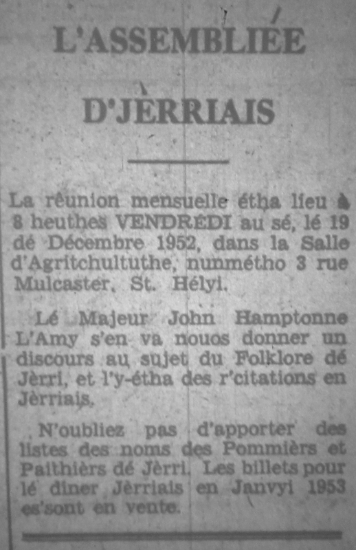

L'Assembliée d'Jèrriais
Lé folklore dé Jèrri
 La rêunion mensuelle eut lieu à 8 heuthes Vendrédi au sé, lé 19 dé Décembre, 1952, dans la Salle d'Agritchultuthe, nunmétho 3 rue Mulcaster, St. Hélyi, souos la présidence du Sénateu Hedley Le Riche Edwards. L'y-avait a bein prés eune nonantaine dé membres présents.
La rêunion mensuelle eut lieu à 8 heuthes Vendrédi au sé, lé 19 dé Décembre, 1952, dans la Salle d'Agritchultuthe, nunmétho 3 rue Mulcaster, St. Hélyi, souos la présidence du Sénateu Hedley Le Riche Edwards. L'y-avait a bein prés eune nonantaine dé membres présents.
Bulletîn d'l'Assembliée
Lé Président annoncit que l'preumié bulletîn es'sa en vente à la rêunion mensuelle dé Janvyi, 1953, à l'Hôtel dé St. Jean. Lé Comité d'Rédaction espéthe en publiyer iun touos les quart-d'an.

Lé Majeur l'Amy
Lé Mâjeur John Hamptonne l'Amy fît un fanmeux discours au sujet du Folklore dé Jèrri. Touos les membres fûtent transportés dans les vièrs temps quand l'y-avait un tas d'drôles dé choses tchi s'passaient qué nou n'pouvait pon explyitchi sénon par la chorchel'lie! L'histouaithe du Saut dé Geoffroi 'tait hardi rêalistique racontée en Jèrriais par lé Mâjeur. L'y-avait, étout, des mystéthes dé bagues pèrdues et pis r'trouvées, des battements d'bachîns, et d'aut' scènes bein întérêssantes.
Nou-s'éthait peut êcouter l'Mâjeur pour des heuthes dé temps, et, en êffet, touos les membres fûtent êmèrvilyis par san discours. Ch'est a bein prés seux qu'tout l'monde en Jèrri ont liu san fanmeux livre: "Jersey Folk Lore", ioù qu'toutes ches histouaithes-là sont êcrites au long, et chu discours-là s'en va nouos faithe vouler lé r'liéthe acouo eune fais!
Lé Président ermèrcyit l'Mâjeur l'Amy pour aver ieu la bouonté dé v'nîn d'vîser à l'Assembliée en Jèrriais, et les membres montrîtent lus appréciation par lus appliaudissements.
R'citations Jèrriaises
Mme. Alice Blampied r'citit "John et Eileen vont en Visite", eune èrcitation tch'est hardi rîsibl'ye. Mme. Kathleen Binet r'citit "Lé Mauvais Sujet", eune raide bouanne plieche par "Elie"; Mme. Edna Barton ercitit eune fanmeuse plieche, "Blanche dé d'Ecaudet au Carnaval", et pis les jannes démouaiselles Marguérite Binet et Marguérite Le Couteur èrcitîtent un dgialogue appelé "Les Valentines". Ches jannes artistes font divèrsement bein ensemblye. I' faut espéther qué nou les ouïtha souvent dans l'temps à v'nîn. Toutes ches danmes fûtent ermèrcyiées par lé Président Edwards pour êt' venues nouos divèrti.
Nouvieaux Membres
Les nouvieau membres êlus à chutte rêunion sont Lé Député H. M. Gibaut d'St. Brélade, et Mme. Vera Gibaut, Moussieu Philip Syvret et sa danme, Mme. Syvret, Mme. Alice Blampied, Moussieu Garnet Pallot et Mme. Ivy Pallot, et Mlle. Mavis Anita le Page.
Lé Dîner Jèrriais
A la fîn d'la séthée, lé Sieur John Wesley Le Breton, Ségrétaithe du Comité Social, mîns les billets en vente pour lé dîner Jèrriais tch'étha lieu à 7½ heuthes Jeudi au sé, lé 22 d'Janvyi, à l'Hôtel dé St. Jean. La rêunion mensuelle dé Janvyi étha lieu en même temps.
Viyiz étout: